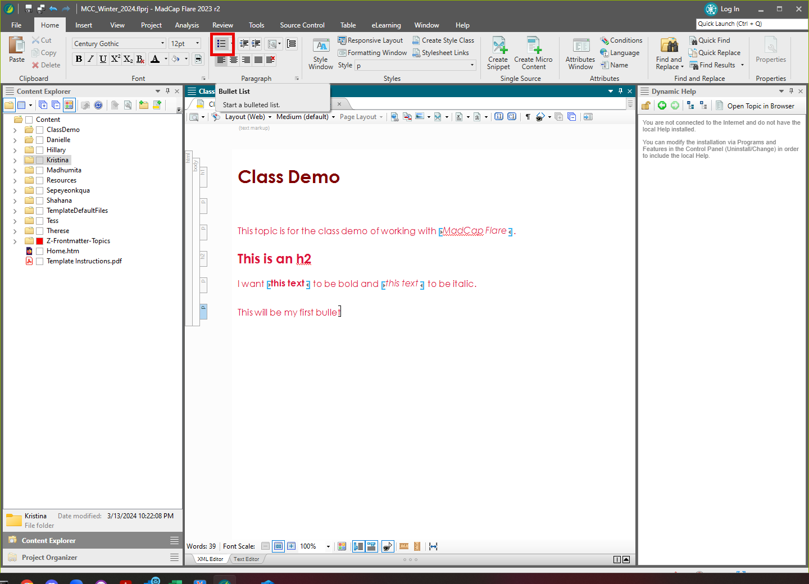
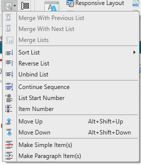

Since Flare topics are just HTML you can add an ul element in the text view, or you can use the Bullet List tool.

The paragraph becomes a paragraph in a list item in an unordered list.You can also click the List Bullet icon again to toggle the list off.
Similar to HTML, you can put lists inside of lists. In Flare, you can use the Move context menu to control the nesting of items. You can also use the List Actions.
